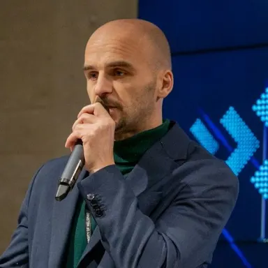
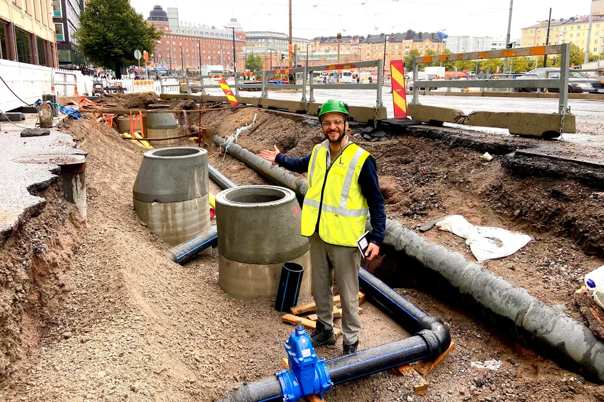
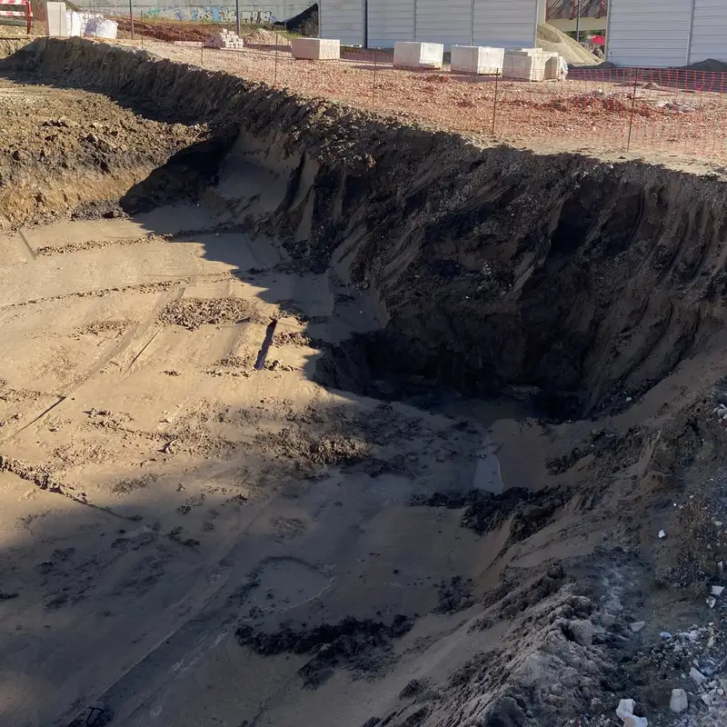
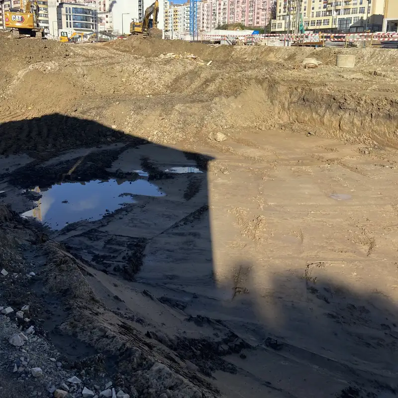

Presse, podcasts og foredrag
Presse og foredrag
Om WorkGuardAI (engelsk)
WorkGuardAI is a construction technology company founded in Finland in 2024. Its working prototype reads the DWG plan a site already has and estimates groundwork progress from ordinary site photos, using an open-source AI depth model. It compares estimated depth with planned depth at each point of the plan and sends email alerts. The prototype has been tested on one real project plan but not yet on a live site. A first field test is the next step.
Stifter
Endrit Kola, Stifter og CEO
Nøglefakta
- Virksomhed
- WorkGuardAI Ab, Business ID 3465002-8, Espoo, Finland
- Stiftet
- 30. juli 2024, Finland
- Fase
- Fungerende prototype / Felttest er næste skridt
- Hvad det gør
- Fremdrift i jord- og anlægsarbejde, målt ud fra DWG-tegningen og almindelige byggepladsfotos.
- Testet indtil nu
- Bygget med input fra en byggepladsleder hos en anlægsentreprenør og testet på én rigtig projekttegning.
Fotos




Kontakt
Endrit Kola · ek@workguardai.com